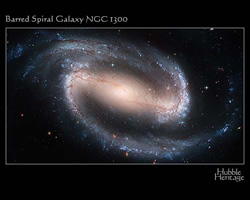
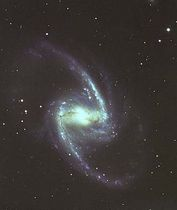
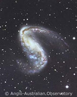

|

NGC1300
Credit: STScI/NASA |

NGC1365
Credit: David Malin, © AAO |

NGC2442
Credit: AAO |
Central bars, which occur in about 50% of all disk galaxies, play an important role in the evolution of the galaxy. They are believed to be temporary structures resulting from gravitational instabilities in the self-gravitating thin disk, and are thought to form in one of two ways: spontaneously, due to internal disturbances within the disk, or through disturbances caused by interactions with neighbouring or satellite galaxies.
The images shown above give the impression that bars are distinct objects, and that we might consider ‘bar stars’ in the same way as we consider bulge or disk stars. However, the origin of bars is more akin to the density wave model for the formation of spiral arms. Stars are constantly passing into or out of the bar, and while the stars that make up the bar are constantly changing, the bar itself appears to remain unchanged.
Bars tend to disturb the orbits of stars in the inner regions of galaxies, exciting disk stars into orbits that lie outside the plane of the disk. These stars join the bulge of the galaxy, an example of secular evolution in bulges. Bars also funnel gas and dust into the centres of the galaxies, a process which may trigger bursts of new star formation. An alternative fate for the inflowing gas may be to feed a supermassive black hole in the centre of the galaxy, perhaps causing the galaxy to become active.
The Milky Way is now thought to be a barred spiral galaxy.